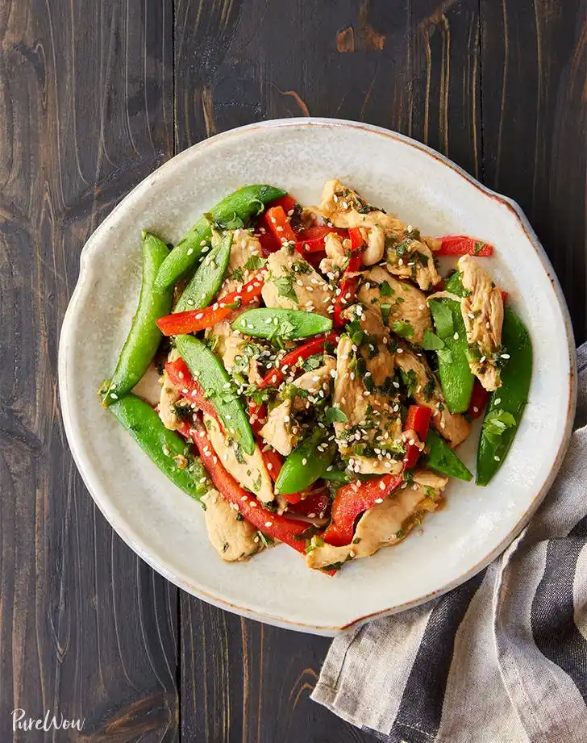

Chicken Stir Fry!
Ingredients
- 2 tablespoons vegetable oil
- 1 bunch scallions, thinly sliced
- 2 garlic cloves, minced
- 1 red bell pepper, thinly sliced
- 2 1/2 cups snap pease
- 1 1/4 cups boneless skinless chicken breast, thinly sliced
- Salt and pepper
- 3 tablespoons soy sauce
- 2 tablespoons rice vinegar
- 2 teaspoons Sriracha
- 2 tablespoons sesame seeds
- 3 tablespoons chopped cilantro
Steps
- In a large saute pan, heat the oil over medium heat. Add the scallions and garlic, and saute until fragrant, about 1 minute. Add the bell pepper and snap peas, and saute until just tender, 2 to 3 minutes.
- Add the chicken and cook until it is golden and fully cooked and the vegetables are tender, 4 to 5 minutes.
- Add the soy sauce, rice vinegar, Sriracha and sesame seeds; toss well to combine. Allow the mixture to simmer for 1 to 2 minutes.
- Stir in the cilantro, then garnish with a sprinkle of extra cilantro and sesame seeds. Serve immediately.
